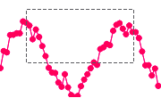
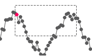
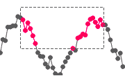

In QCustomPlot, each plottable can be selected by the user, or programmatically. If the user shall be able to select data in any way, the interaction flag QCP::iSelectPlottables must be set in QCustomPlot::setInteractions.
The selection granularity can be controlled via QCPAbstractPlottable::setSelectable, by specifying an according QCP::SelectionType. For example, when using QCP::stMultipleDataRanges, the user will have full freedom over which data points he selects and which not. On the other hand if we use QCP::stDataRange, the selection mechanism will enforce that the selected data is always one contiguous range. So if the user selects two distant data points (while holding the multi-select modifier, usually Ctrl), all data points in between those two points will also become selected.
These images show the effect of the different selection types, when the indicated selection rect was dragged:
stNone |

stWhole |

stSingleData |
stDataRange |

stMultipleDataRanges |
The user can select data points in two ways:
The first method is to click on the data points with the mouse cursor. In this case, if the user wants to select multiple data points one after the other, he has to press and hold the multi-select modifier (QCustomPlot::setMultiSelectModifier), and QCP::iMultiSelect must be set in QCustomPlot::setInteractions.
The other method is by dragging a selection rect over the data points that shall be selected. This is possible if QCustomPlot::setSelectionRectMode is set to QCP::srmSelect. Note that while the selection rect mode is set (is not QCP::srmNone), mouse dragging will not be forwarded to underlying layout elements. This also means that axis ranges can't be dragged with the mouse anymore. If you wish to provide your user both with axis range dragging and data selection/range zooming, use QCustomPlot::setSelectionRectMode to switch between the modes just before the interaction is processed, e.g. in reaction to the QCustomPlot::mousePress or QCustomPlot::mouseMove signals. For example you could check whether the user is holding a certain keyboard modifier, and then decide which mode shall be set.
Once the selection state of a plottable changes either by user interaction or programmatically, the affected plottable emits the signal QCPAbstractPlottable::selectionChanged, carrying the currently selected data points in the form of a QCPDataSelection. An overload of this signal is available, which just indicates in a bool whether the plottable has any selected data points.
By calling QCustomPlot::selectedPlottables you can retrieve a list of plottables which currently have selected data points. The current selection of a plottable can be retrieved via QCPAbstractPlottable::selection. There is also a method dedicated to QCPGraph plottables specifically, called QCustomPlot::selectedGraphs.
A QCPDataSelection is a list of QCPDataRange instances, which themselves hold the begin and end index of the respective data range. In the case of a one-dimensional plottable (deriving from QCPAbstractPlottable1D, e.g. QCPGraph, QCPCurve, QCPBars, etc.) you can access the data points by index, using the data container's at(int index) method. Alternatively you can simply add the integer index to the data container's begin() iterator.
As an example, the following code snippet calculates the average value of a graph's data selection:
Since QCPDataSelection instances are not tightly bound to a specific plottable, it is possible that the indices they contain exceed the valid data range of a plottable. The valid data range can be retrieved by accessing the plottable's data container and calling QCPDataContainer::dataRange. With this, you can check whether a given QCPDataSelection is contained in the valid range, and trim it if necessary, by using QCPDataSelection::contains, and QCPDataSelection::intersection, respectively.
Of course, the data selections returned by QCPAbstractPlottable::selection are always within the plottable's data bounds, as long as they aren't changed after retrieving the selection.
If you only want to find out which data point of a plottable is at or close to a given pixel position (without the need for a click or actual selection event), you can use QCPAbstractPlottable::selectTest. For example, the following code retrieves an iterator to the data point closest to a given QPoint in pixel coordinates: